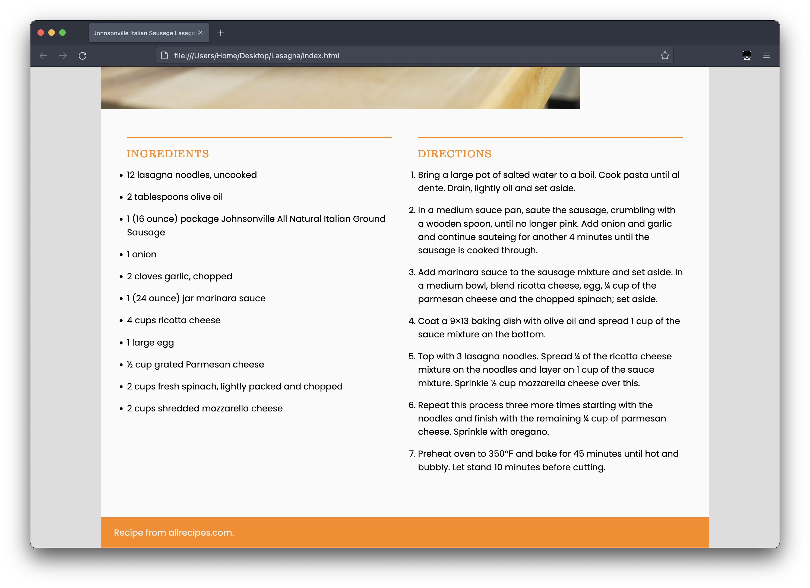

Using the files from the last assignments, use CSS Grid to make the page look good on laptop and desktop screens. Don’t worry about mobile this time; it won’t look good.
Tasks and requirements
Read all the instructions carefully before starting.
Start by reading my comments from the last assignment. Make sure to address every issue on it.
Copy your CSS and JPEG files from last week into the new folder.
Make the necessary changes to make your page look like this:

You want your content centered on the page.
You want your header to take the whole width of the content.
Caption will go on the right of the image.
The Ingredients and Directions sections should take one column each.
The footer must take the whole width of the content.
Don’t forget: You want to work offline, saving your files on your computer. Only when you’re happy with the results that you want to upload to GitHub. You may change your mind and upload a new file, but what you don’t want is to work straight on GitHub.
I suggest, however, that you upload the old HTML, CSS, and JPEG files to the new folder in GitHub before you even start changing anything.
Then you check your name. It'll be the last week's layout, of course.
When you're done working with your new CSS, you use it to replace the old one.
This will prevent you from emailing me the night the assignment is due saying that your file is not working.
Whatever you do, though, you may not edit the HTML file at all.
Submission
You don’t have to submit anything on Canvas.
Got to your public repository on GitHub, and open a new folder named grc338/css-grid-layout/. ➤